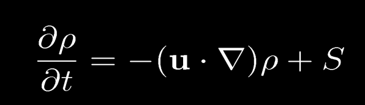
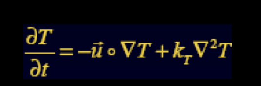

Overview
For our final project, we want to create a realistic simulation of smoke using the Navier-Stokes equations. In order to render the smoke, we are going to use a ray marching algorithm.
Problem Description
The problem we want to solve is simulating and rendering realistic smoke in either 2D or 3D. This problem is important, because smoke is widely present in movies, games, and engineering applications. Being able to render smoke and simulate its motion will allow to to create a wide array of special effects. The most challenging part of the project is figuring out how we are going to model our smoke and render that on the screen.
Our general approach on solving this problem is by splitting this problem into two parts. The first part is simulating the dynamic motion of the smoke using a series of Navier-Stokes equations. The second part is actually rendering the smoke on the screen using some type of ray marching algorithm.
Simulation
For our simulation, we update the position, density, and temperature using an Incompressible Navier-Stokes equation. Below are the equations we might use in our simulation. The simulation process includes several parts: updating velocity, updating density, updating temperature and displaying density. The most important part of these is the update of velocity. We need to separately calculate the advection form, external forces, and pressures according to the Navier-Stokes Equation. Specifically, advection means moving the smokes through its velocity field. One of the most significant external forces is gravity.
Then we declare the variable symbols used here: u is the velocity field, v is viscosity(we may not need it in smoke simulation), f is external forces including gravity, ρ is smoke density, p is pressure, S is external smoke sources, and T is temparture of smoke.

|
|

|
|

|
Rendering
Smoke rendering is a crucial part of our project and is achieved by separating the scene into many cells and then using the result of simulation to interpolate within the cells. To render the texture, we used temperature obtained from simulation instead of actual color values, and then we use the temperature value to look up for the color value from another texture. What's more, we use ray marching to simulate illumination; thus, the density of smoke influences the brightness and transparency of smoke.
Goals and Deliverables
For this project, our deliverables will be screenshots of the smoke simulation in action. We can similarly showcase our smoke simulation in action during our demo. In order to measure the quality of our simulation, we could measure the time between each frame of our simulation (relative speed up) and the quality of the smoke rendered.
Our plan is to be able to load some file with initial smoke positions and use that file to simulate smoke on a GUI.
Our hopes for this project is to add interactivity. When the user clicks the mouse at a location within the GUI, we can start a smoke effect at that location. We also hope to be able to modify different parameters of the smoke within the GUI, such as density and temperature.
Schedules
First 2 weeks: focuse on the simulation partLast 2 weeks: focus on the rendering part
Resources
http://www.cs.unc.edu/~lin/COMP768-S09/LEC/smoke.ppthttps://github.com/mharrys/fluids-2d
http://graphics.ucsd.edu/~henrik/papers/smoke/smoke.pdf
https://rachelbhadra.github.io/smoke_simulator/index.html?fbclid=IwAR10sihsuvDXugkPA81n9X7PtsjMXmsCoOasOKW6_Xz9vhd24IaL2TCgxSc#contributions